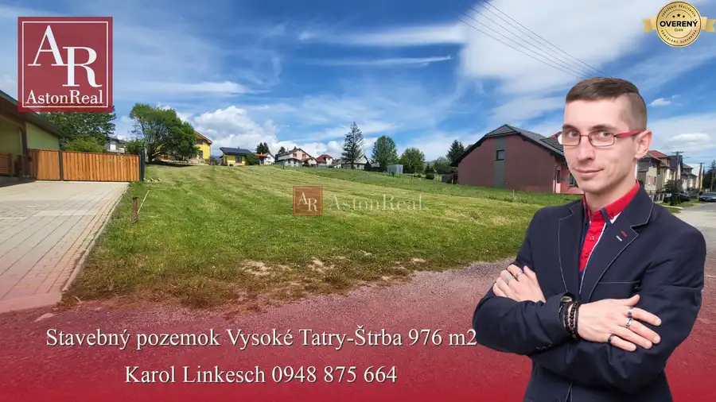
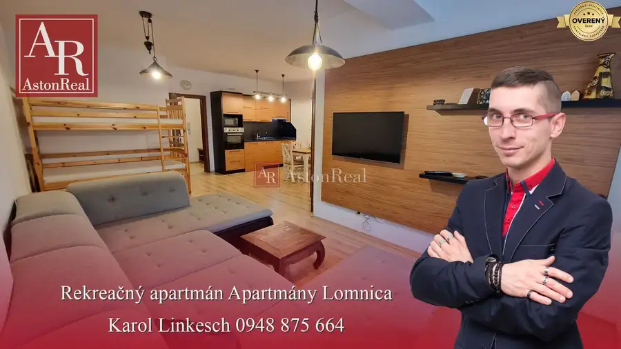
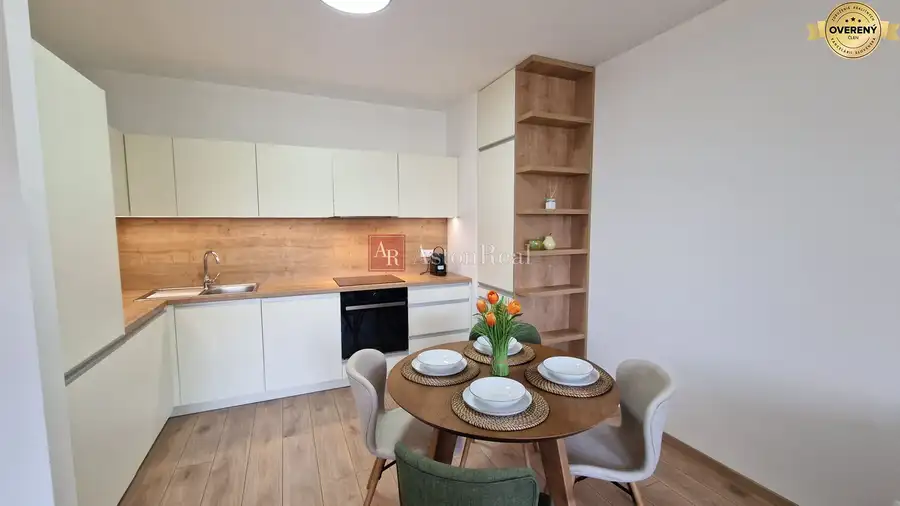
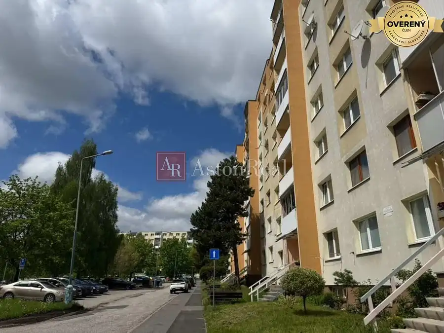
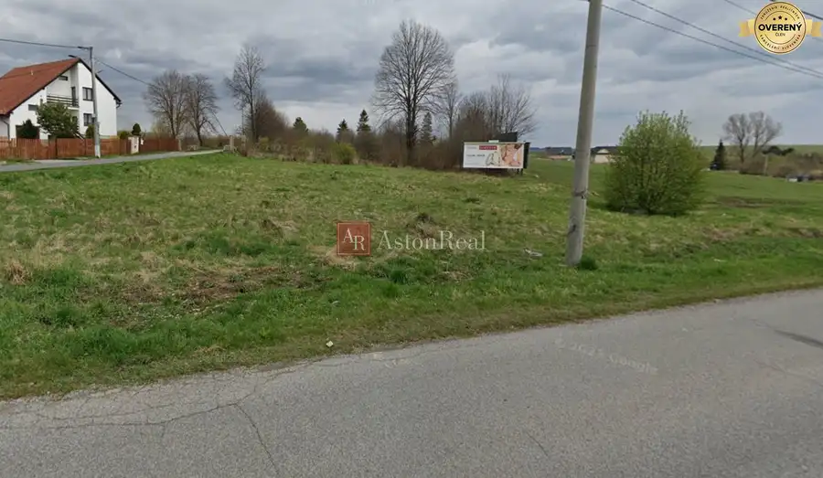
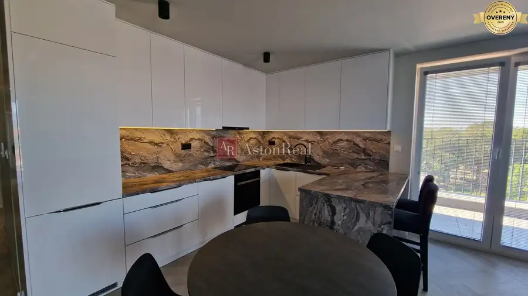
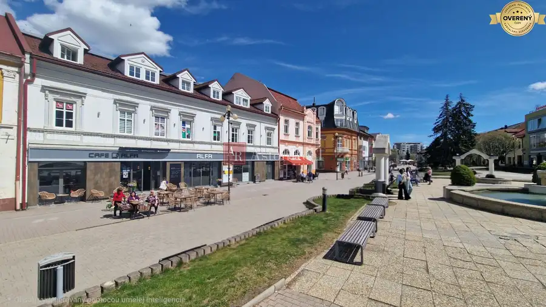
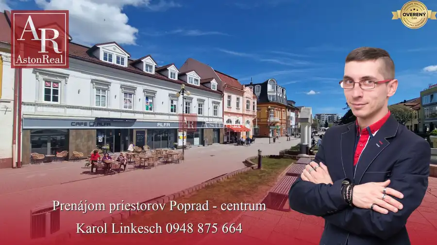

Aktuálna ponuka
Nehnuteľnosti, ktoré ponúkam
8 nehnuteľností na predaj a prenájom. Vyberte typ, alebo napíšte lokalitu.
8 z 8 ponúk

Pozemok10 164 000 €PREDAJ-St.pozemok - Vys.Tatry - Štrba - 976 m2 Vysoké Tatry 976 m² AstonReal Maklér: Karol Linkesch Ponúka na predaj : Stavebný pozemok v obci Štrba. Pozemok je mierne svahovitý, s rozlohou 976 m2. Sú na ňom všetky…
Apartmány10 185 000 €2 izbový Rekreačný apartmán Vys.Tatry-Veľká Lomnica 57 m2 Vysoké Tatry 2-izbový57 m² AstonReal Maklér: Karol Linkesch Exkluzívne ponúka na predaj : Rekreačný apartmán vo Vysokých Tatrách - Veľká Lomnica - objekt APARTMÁNY LOMNICA .…
Byt10 189 000 €Exkluzívne 2 izbový byt POPRAD Karpatská, s garaž. st., balkón, 58 m2 Poprad 2-izbový55 m²3. podlažie AstonReal Maklér: Karol Linkesch Ponúka na predaj : Moderný a priestranný 2 izbový byt v NOVOSTAVBE na Karpatskej ulici v Poprade. Bytový dom bol…
Byt2 155 000 €Súrne kúpim 3-izbový byt POPRAD - juh, s balkónom Poprad 3-izbový68 m² AstonReal hľadá pre konkrétneho klienta, súrne 3-izbový byt. Môže byť len čiastočne prerobený. Dobre by bolo, aby bol s balkónom. Lokalita je jedno…
Pozemok3 188 600 €EXKLUZÍVNE - PREDAJ pozemok POPRAD-Veľký Slavkov, 920m2 Poprad 920 m² Ponúkame na predaj lukratívny, rovinatý pozemok s výmerou 920 m² vo vyhľadávanej lokalite obec Veľký Slavkov, len na skok od Popradu a Vysokých…
Byt10 1 200 €PRENÁJOM - Poprad - luxusný 3-izbový byt s klimatizáciou a 2 garáž.st. Poprad 3-izbový87 m²7. podlažie AstonReal ponúka náročným klientom, na prenájom blízko centra mesta Poprad, luxusný 3-izbový byt v novostavbe Hviezdoslav. Byt sa nachádza na…
Nebytové priestory6 Cena dohodouPrenájom kancelárskych priestorov - POPRAD - centrum - 17 m2 Poprad 17 m²1. podlažie AstonReal Maklér: Karol Linkesch Ponúka na: prenájom kancelárske priestory v budove Alfa priamo na námestí Sv. Egídia. Priestor sa nachádzajú na…
Nebytové priestory6 Cena dohodouPRENÁJOM Priestory Poprad - Námestie Sv.Egídia - prízemie - 35 m2 Poprad 35 m² AstonReal Maklér: Karol Linkesch Ponúka na: prenájom priestory v budove Alfa priamo na námestí Sv. Egídia. Priestory je možné použiť buď na…Tomuto výberu zatiaľ nezodpovedá žiadna ponuka. Napíšte mi, čo hľadáte.
Hľadám pre klientov